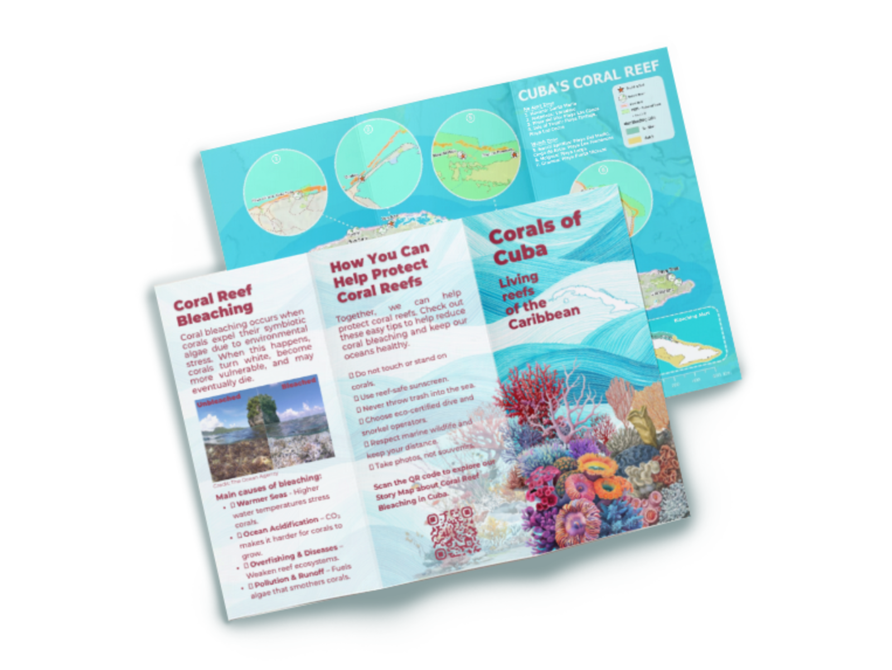
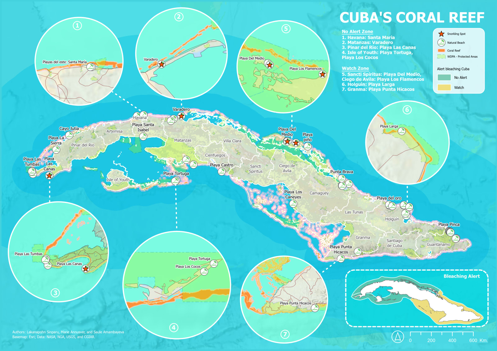

Cartographic Design & Geomedia
Fading
Colors
Coral reef bleaching in Cuba
A cartographic story about Cuba’s coral reefs, bringing together thematic maps, visual storytelling, and printed design.
From map to print

The project
Making an environmental
story visible.
This group project explores coral reef bleaching in Cuba through cartographic storytelling. The map places reef locations in their coastal context, while the brochure introduces bleaching and reef protection to a wider audience.
The cartographic piece
Cuba’s coral reefs

Continue the story
One landscape.
Two ways to explore.
The printed pieces offer an overview. The ArcGIS StoryMap brings the maps and narrative together in an interactive reading experience.
Read Fading ColorsDigital storytelling
Maps and narrative presented through ArcGIS StoryMaps.
Printed geomedia
A thematic map and brochure designed to carry the story beyond the screen.